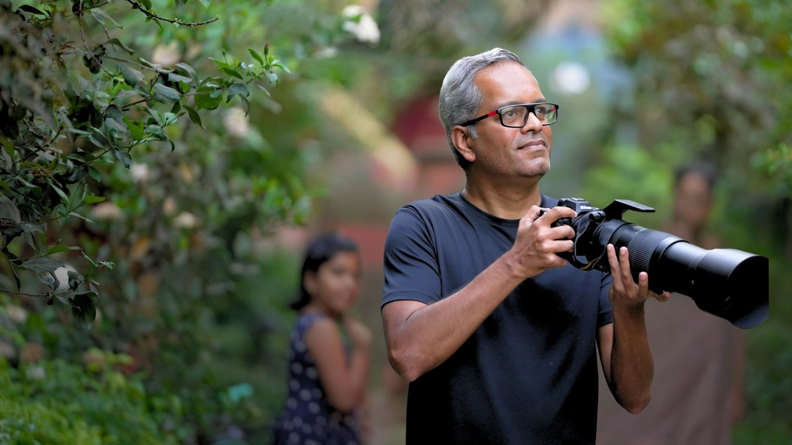

Residents SpotlightBrikesh and Neha have been part of the GoodEarth community for over 5 years. Their home at Motif, named Casa De Sushi (after their dog), is their second home at Malhar.
A Fernando Botero Mona Lisa from Bogotá. Street art picked up outside a bar in Colombia. A bird photograph from Bharatpur. Masks from fifteen years of travel. None of it planned as a collection, all of it unmistakably them.
In this episode of Come Over, Brikesh and Neha open up Casa De Sushi and show us what a home looks like when it’s built slowly, deliberately, and from everywhere.